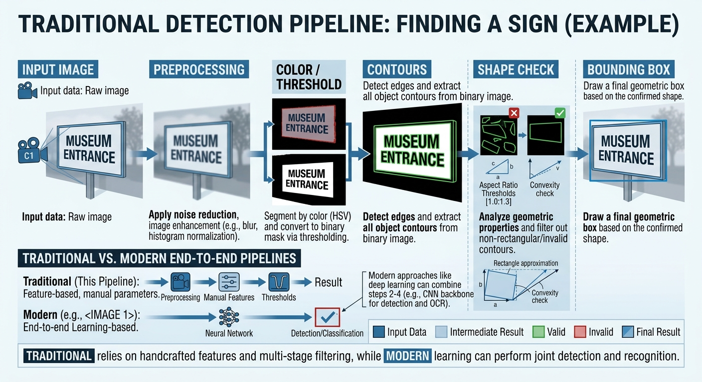
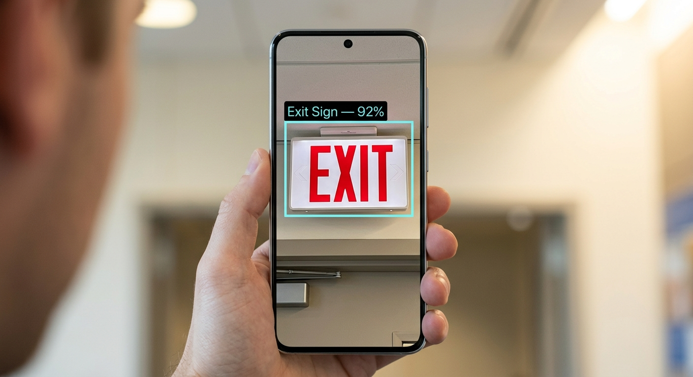
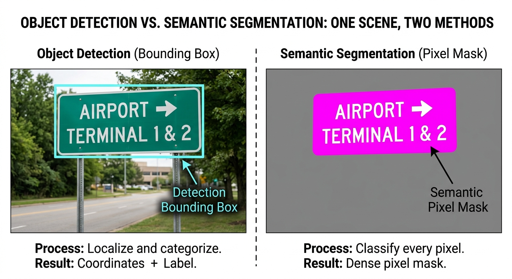
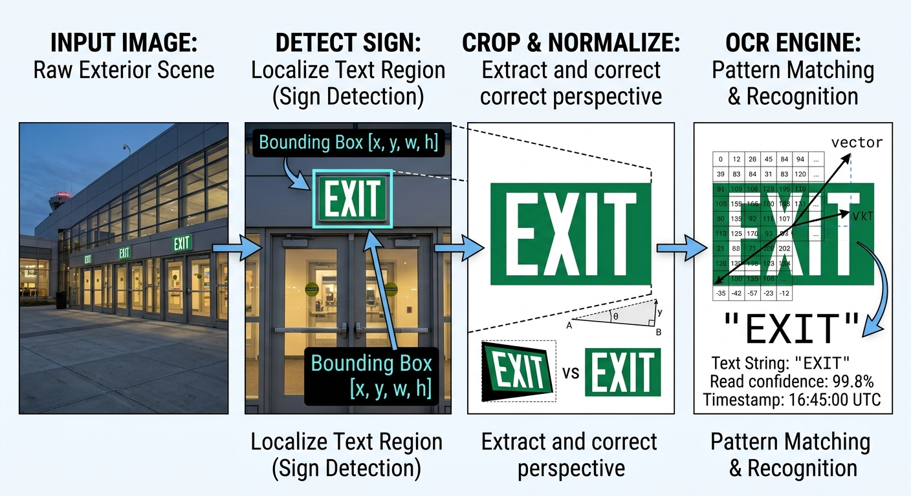

LISTEN TO THIS PAGE
Computer Vision Detection Techniques
Listen to an overview of traditional computer vision, deep learning, object detection, segmentation, and OCR.
CS 663 — Computer Vision
Computer Vision Detection Techniques
Different approaches researchers use to find signs in images and video.
How Can a Computer Find a Sign?
Once a camera captures an image, the computer needs a way to determine whether a sign is present and where it is located. Researchers have used many different computer vision techniques to solve this problem. Some approaches use traditional image processing techniques, while newer systems commonly use deep learning. The best approach can depend on the environment, the type of signs being detected, the amount of training data available, and the computing power of the device.
1. Image Preprocessing and Traditional Computer Vision
Before a computer vision system tries to find a sign, the image can be processed to make important features easier to detect. This step is called image preprocessing. Preprocessing can include converting an image to grayscale, adjusting brightness or contrast, removing noise, or applying thresholding.
Traditional computer vision methods can then use features such as color, edges, shapes, texture, and HOG features to identify possible signs. Traditional sign and signage detection research has used techniques such as edge detection, shape detection, classifiers, and text-region detection. [7] For example, if a sign has a particular color, the system can search the image for pixels with similar colors. Edges and contours can then be used to find objects with a particular shape.
Color Detection
Searches for colors that are commonly found on a certain type of sign.
Edge Detection
Finds strong changes in intensity that can represent the boundaries of objects.
Contours
Groups edges together to identify possible object shapes in an image.
Shape Features
Uses properties such as size, aspect ratio, or geometry to identify possible signs.
Example: Finding a Sign Using Image Processing
A simple sign detection system can use several image processing steps. The example below is not a complete sign detector, but it demonstrates the basic idea behind a traditional computer vision approach.

1 - Input Image
Start with an image captured by a camera.
2 - Color Filtering
Keep pixels that match a selected color range.
3 - Find Contours
Find connected regions in the filtered image.
4 - Check Shape
Remove regions that do not look like possible signs.
5 - Bounding Box
Draw a box around the possible sign.
Simple Implementation Example
The following example demonstrates a simple OpenCV approach for locating possible objects using image thresholding and contours.
import cv2
image = cv2.imread("sign.jpg")
gray = cv2.cvtColor(image, cv2.COLOR_BGR2GRAY)
_, threshold = cv2.threshold(
gray, 150, 255, cv2.THRESH_BINARY
)
contours, _ = cv2.findContours(
threshold,
cv2.RETR_EXTERNAL,
cv2.CHAIN_APPROX_SIMPLE
)
for contour in contours:
x, y, width, height = cv2.boundingRect(contour)
if width > 30 and height > 30:
cv2.rectangle(
image,
(x, y),
(x + width, y + height),
(0, 255, 0),
2
)
cv2.imshow("Possible Signs", image)
cv2.waitKey(0)
cv2.destroyAllWindows()The image is first converted to grayscale and thresholded so that different regions can be separated from the background. OpenCV then finds the contours of these regions and places bounding boxes around regions that are large enough to be considered possible objects.
This approach is useful for demonstrating basic image processing, but it does not actually understand what a sign is. Other objects with similar shapes or brightness could also be detected.
2. Deep Learning
Deep-learning-based computer vision systems learn visual patterns from training data instead of relying only on manually selected rules.
For sign detection, an object detection model can be trained using images where signs have been labeled with bounding boxes. The model learns features that help it distinguish signs from other objects in an image.
This makes deep learning useful for more complicated environments where signs can have different sizes, colors, viewpoints, and backgrounds. Previous research has also developed methods that specifically consider small signs, different scales, and surrounding context. [3]
Object Detection
Object detection combines two tasks: determining what objects are present and determining where those objects are located. For example, a detection model could analyze a camera frame and produce a result such as:

Example Detection Result
Object: Exit Sign
Confidence: 92%
Location: Bounding box around the sign
The bounding box is especially important for this tutorial because the goal is not only to recognize a sign but also to locate it in the camera's view.
YOLO and Real-Time Detection
YOLO, which stands for "You Only Look Once," is a family of object detection models designed for detecting objects in images and video. YOLO-style detectors are useful for mobile and real-time applications because object detection can be performed on individual video frames.
Cheraghi, Fusco, and Coughlan used a YOLO-based approach in their work on real-time indoor sign detection. Their system also considered information from the smartphone's sensors to help compensate for camera orientation. [1]
Detecting Signs at Different Scales and Perspectives
Detection systems need to recognize signs even when their size and appearance change in the camera image. Multi-scale features allow a model to use information from different image sizes, which can help detect both large and small signs.
TSingNet, for example, uses a Scale-Aware Feature Pyramid Module to improve detection of traffic signs at different scales. It also uses surrounding context to help with difficult signs. [3]
Other research has also used multi-scale image features to detect traffic signs in real-world scenes. [4]
Handling Partially Occluded Signs
A sign may not always be completely visible. Another object, person, or part of the environment can block part of the sign. This is called occlusion.
Occlusion makes detection more difficult because the computer vision system may only see part of the visual features that normally identify the sign.
Researchers have developed different approaches for handling partially hidden signs. For example, the D-patches approach uses local parts of a sign instead of depending only on the complete sign being visible. These local features can then be combined to determine whether a sign is present. [5]
Other research has also investigated how occlusion can affect object detection when objects are viewed from different viewpoints. [6]
Semantic Segmentation
Object detection usually represents an object with a bounding box. Semantic segmentation takes a different approach by assigning pixels to different categories.

Instead of drawing only a rectangle around a sign, a segmentation system can create a mask showing which pixels belong to the sign.
Fusco, Cheraghi, and Coughlan used U-Net-based semantic segmentation as part of their indoor navigation system for detecting exit signs. [2]
OCR as a Secondary Step
Finding a sign and reading a sign are two different computer vision tasks.
Finding the Sign
The system determines whether a sign is present and where it is located in the image. Object detection and localization are commonly used for this task.
Reading the Sign
After a sign has been found, optical character recognition (OCR) can be used to recognize text such as "EXIT" or "RESTROOM."
This tutorial focuses mainly on finding and locating signs. OCR is an additional step that can be performed after the system has identified the relevant sign.
For example, a system could first detect an EXIT sign and draw a bounding box around it. The detected region could then be cropped and sent to an OCR system to read the word "EXIT."

Detecting the sign first helps the system focus on the relevant part of the camera image instead of trying to read text from the entire scene. If the sign is too small, outside the camera's view, blocked by another object, or difficult to detect because of the background, the system may fail before OCR is even used.
Earlier research on indoor navigation has combined sign detection with text recognition and text-to-speech to provide information to users. [7]
Comparing the Approaches
| Approach | How It Works | Advantages | Limitations |
|---|---|---|---|
| Color / Thresholding | Searches for pixels that match selected properties. | Simple and fast. | Sensitive to lighting and background colors. |
| Contours / Shape | Uses edges and shapes to find possible objects. | Easy to understand and implement. | Can confuse signs with similar objects. |
| Object Detection | Learns to identify objects and their locations. | Can handle more complex scenes. | Requires labeled training data and computing resources. |
| Semantic Segmentation | Classifies pixels belonging to an object or category. | Provides detailed object boundaries. | Can require more computation than simple detection. |
Which Approach Should Be Used?
There is not one approach that works for every sign detection problem. A simple image-processing method may be useful when signs have predictable colors and shapes.
Deep-learning methods can be more useful when signs appear in different environments, sizes, viewpoints, and backgrounds. However, they require training data and may require more computing resources.
For a mobile accessibility system, researchers also need to consider speed, battery usage, model size, and whether processing is performed directly on the phone or remotely.
What Comes Next?
These techniques provide the basic tools for detecting signs. The next section looks at previous research and how researchers have applied these approaches to real-world sign detection.
Next: Previous Research →